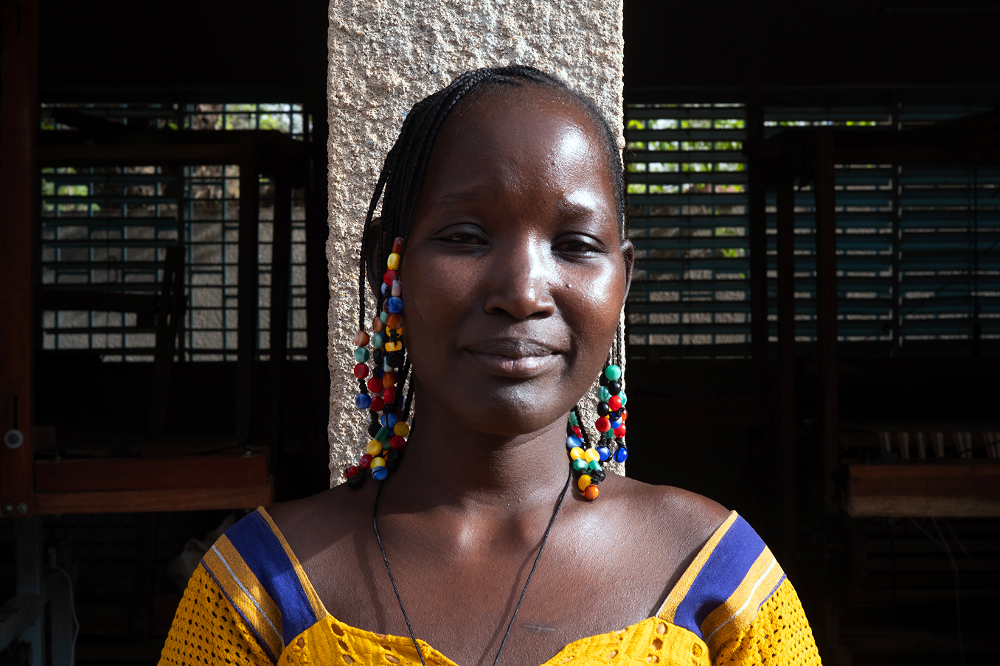
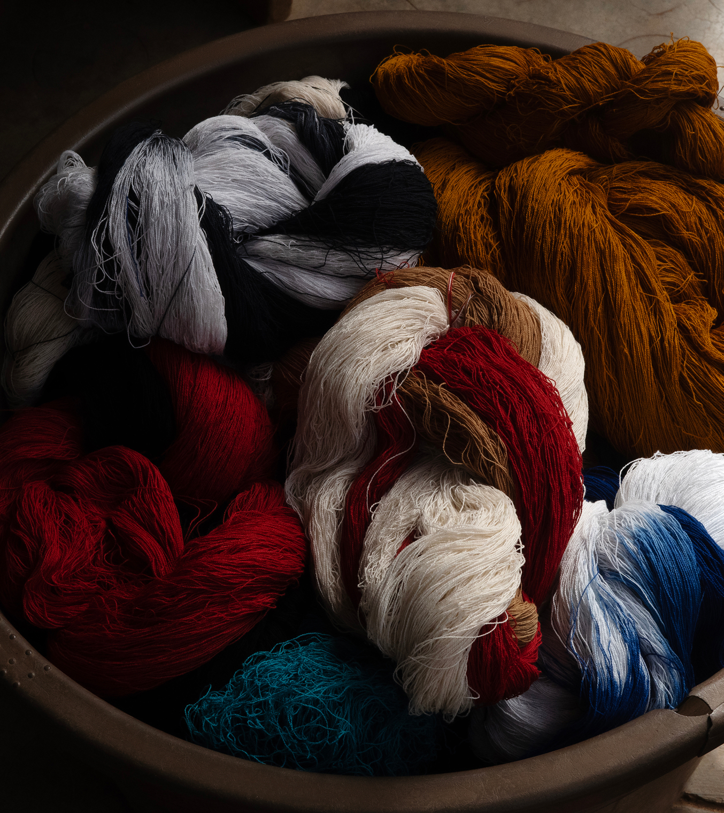
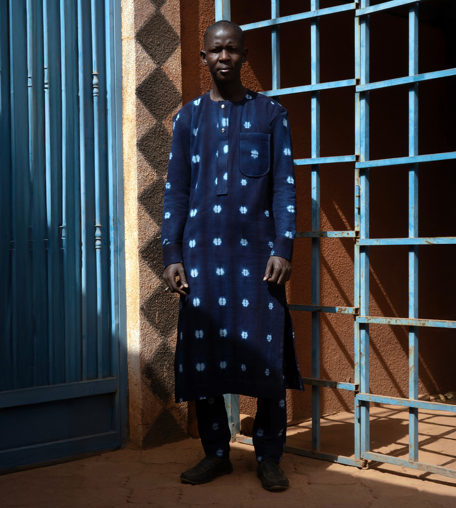
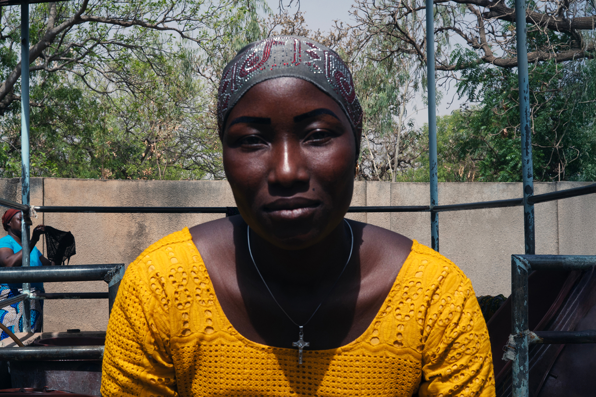
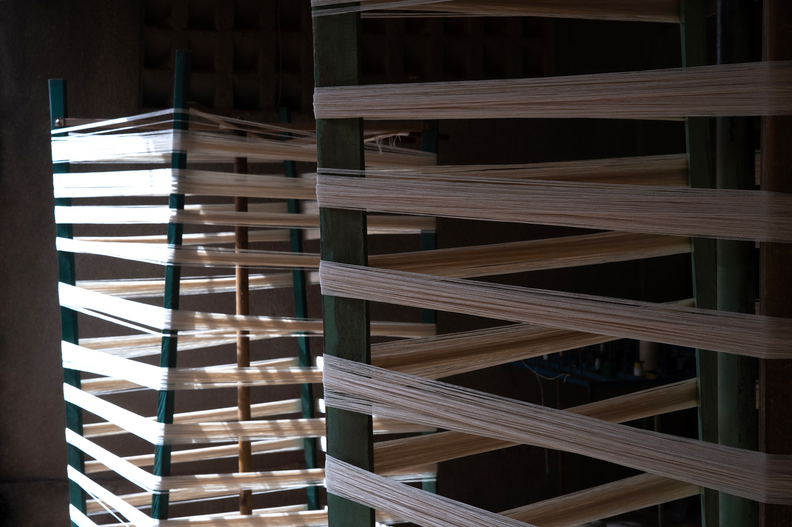
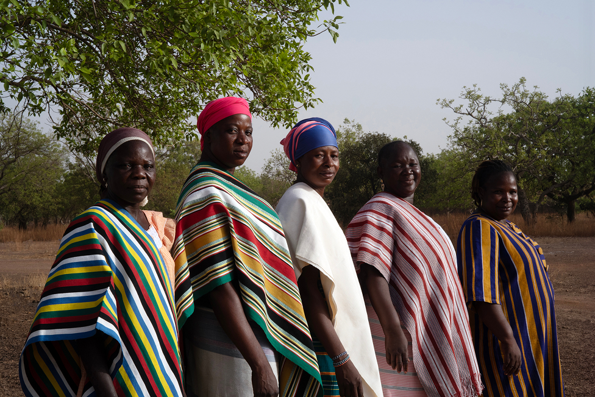

A product is only as meaningful as the hands that shaped it. By shedding light on the individuals whose expertise is woven into each piece, we honour a community of makers whose lives and lineages are the true soul of this collection.
A product is only as meaningful as the hands that shaped it. By shedding light on the individuals whose expertise is woven into each piece, we honour a community of makers whose lives and lineages are the true soul of this collection.


Ilboudo Pauline,
Weaver
Pauline believes handmade fabric carries a history that machines cannot replicate. For her, working with local cotton is an act of pride, connecting her heritage to a global audience.
What is the most important advice you give to someone new joining?
I tell them to be patient and to learn step by step. It is important to do the work honestly, enjoy what you are doing, and trust the process. With time, they will improve.
How does it feel to know that your work is being carried around the world?
I feel very proud that our quality is recognised globally. It gives me a sense of encouragement, knowing that something made by hand here can be valued so far beyond our local community.


Djiga Ibrahima,
Production Director
A master who finds quietude in the rhythm of the loom. Now a teacher, he maintains that patience is the first lesson any hand must learn to preserve the integrity of the craft.
What makes Burkina Faso textiles unique compared to the rest of the world?
Our textiles are an expression of culture. It is knowledge we learn young and carry with us. It is not just about producing fabric, but about preserving a way of making that has meaning.
How has the work changed now compared to the past?
In the past, weaving was done individually at home. Today, it is more organised with defined roles and a focus on quality. What remains the same is the foundation, the techniques are still rooted in our culture.


Kiendrebeogo Isseta Pélagie,
Weaver
After 16 years, Pélagie’s hands move by memory. She finds purpose in the slow, steady pace of the work, which allows her to support her family and find pride in every finished piece.
How would you describe the craft to someone who has never seen it?
The work requires both skill and patience. Everything is done by hand, so the process builds with experience. After many years, you become more confident and efficient in the rhythm.
Why is it important to keep passing this knowledge down through generations?
This is something we learn from others and continue to build on. Sharing this knowledge creates value for us, both in our work and in our lives, allowing others to benefit from the craft as well.

SHOP WOMEN'S NEW ARRIVALS >